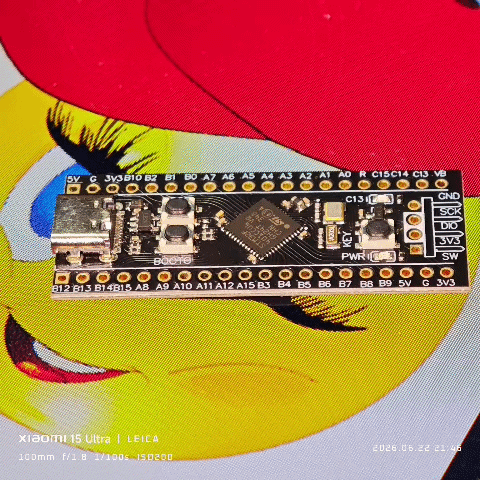

Arduino UNO
Beginner Friendly • Fast Prototyping
Open
Arduino • STM32 • Embedded Builds


Arduino UNO is widely used for beginners and rapid prototyping. Ideal for sensor-based projects, automation, and learning embedded systems.
Massive support for sensors, displays, motors, WiFi modules. Plug-and-play ecosystem.
Good for low-speed tasks. Not suitable for heavy computation or real-time processing.
STM32 offers high performance ARM Cortex architecture. Suitable for real-time systems, robotics, and advanced control.
Supports HAL, LL, CMSIS, and Arduino Core. More complex but powerful.
High-speed processing, DMA support, real-time capable.